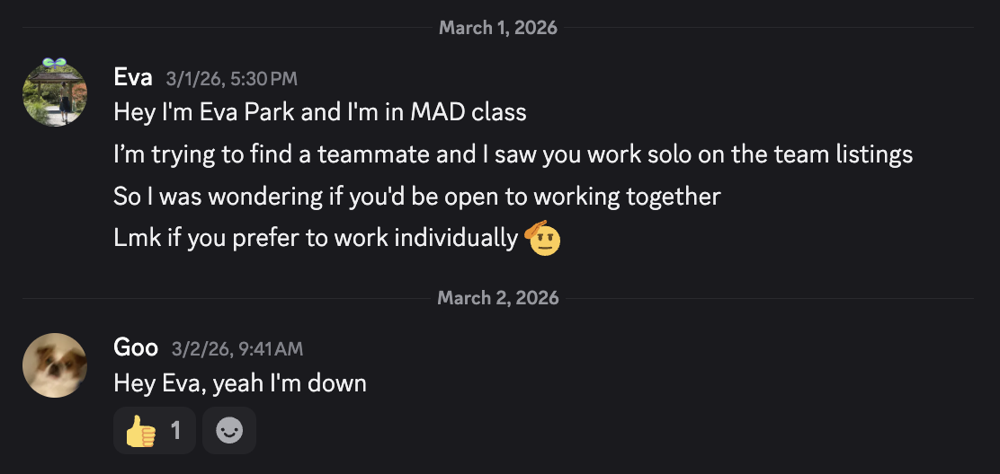

마지막 학기의 Mobile App Development란 수업에서 한 사람을 만나게 됐어. 처음 그 수업에 들어갔는데 웬 한 동양인 여자애가 있는 거야. 일본 사람인가 한국 사람인가 그렇게 생각했었고, 뭔가 그냥 그렇게 남자들이 많은 수업과 환경에서 그런 여자를 보게 되니까 뭔가 그냥 신기한 듯 눈이 가더라. 뭐 몰래몰래 힐끗힐끗 본 건 아니지만 그냥 뭔가 느낌이 좀 남달랐었어. 그 여자애 가방도 하필 내가 옛날에 메던 그 가방이랑 같은 거여서 눈이 갔고, 매력이 조금 있는 사람이구나라는 건 그냥 느꼈어.

처음 만났던 그 교실의 기억
images/ch2-first-meet.jpg
그러다!!!! 어느 날 그 여자에게서 디스코드가 오더라. 그냥 당황했다기보다 그냥 엥?? 이 정도였어. 디스코드 내용은 프로젝트를 같이 하자는 내용이었고.. GSU에서 정말 많은 그룹 프로젝트를 해봤었던 나는 정말 이 마지막 그룹 프로젝트는 정말 죽어도 남이랑 같이 하기 싫었는데, 그래서 혼자서 하겠다고 했었는데, 뭔가 이상하게 그 여자랑 같이 안 하기가 싫더라.. 아니 내가 지금 생각해도 잘 모르겠어. 그냥 진짜 여자여서 받아준 건가? 내가 여미새인가?? 아님 내가 그 여자애 진짜로 생각이 있었던 건가.. 그렇게 디스코드를 보니까 마침 이름이 한국 사람 이름이었고, 그렇게 문자를 하다 보니까 금방 친해졌던 것 같아.
Eva Park, 박은비라는 사람을 그렇게 만나게 됐어.